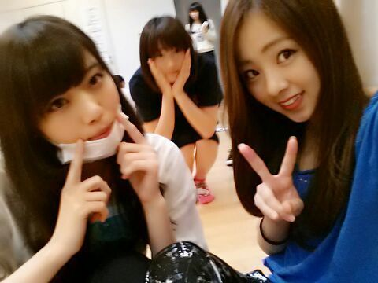

| 2013/12 20 Fri | 乃木坂46, 初 武道 館 X'masライブ!!! 前日bl og Rotty♪ |
こんばんわぁ〜(*´ω｀*)ノ
Rotty☆でーす //
Rotty さゆり
わっふぁ〜い わっふぁ〜い ♪
明日は 武道館にて 乃木坂46
ライブします ！！！
もちろんっ ろってぃ−もおるよ〜(*^.^*)
歌うよ〜踊るよ〜
初めての武道館 ！！
ろってぃ−本間に めっちゃ頑張るね！
ろってぃ−コール 耳済ませて聞くからねん♪
皆の顔 ちゃんと見るからねん！
この笑顔の人 是非見つけてくださ〜い(*´ω｀*)あは
クリスマスライブだし、、、
サンタさん 武道館に来てくれないかな。？
Merry X'mas ☆

あっ, あっ, あっ, ( ; ゜Д゜)
・・・・・チーン。
武道館のリハーサルとかに集中しててなあ、
『 2013 ☆ THA MANZAI 』見るの忘れてん。笑
悲しいたけ〜(´；ω；｀)
まっ まっ まっ、 またネットとかで見る ！！！
やから 大丈夫、やと思う ♪笑
リハ中。
ななせ、らりん、ろってぃー

明日も 、雨降っちゃうかなあ？？
皆さん、足元に気を付けてきてくださいねん(*^.^*)
あとっ、皆さんからのたくさんのプレゼント
ちゃんとろってぃ−のもとに届きました！
嬉しいものばかりです。
本間に ありがとう (*^.^*)
皆 だいすきぃ〜〜
ぢゃあね また武道館でねっ ♪////
のし Rotty★
コメント(200)
2013/12/20 00:00